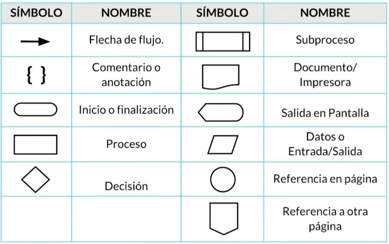

UT 1 Introducción a la programación

¿Qué es un programa?
Un programa informático es un conjunto de instrucciones escritas en un lenguaje de programación que indican al ordenador cómo realizar una tarea. Estas instrucciones, llamadas código, deben ser traducidas mediante un compilador o un intérprete para que la máquina pueda ejecutarlas.
En términos sencillos, un programa permite que una computadora lleve a cabo acciones específicas: desde responder a las órdenes de un usuario hasta ejecutar procesos de manera automática. Dichas acciones pueden realizarse de forma secuencial (una tras otra) o paralela (varias al mismo tiempo).
Ejemplo de un programa informático con interacción humana
flowchart TD
B{"¿a>b?"} -- Sí --> C["Mostrar en pantalla: a"]
B -- No --> D["Mostrar en pantalla: b"]
A(["Inicio programa"]) --> n1["Introducir valores a y b"]
n1 --> B
C --> n3["Fin programa"]
D --> n3
n1@{ shape: rect}
n3@{ shape: rounded}
No todos los programas requieren de una interacción humana. Dentro del contexto de las máquinas y los autómatas, un programa podría referirse al de un electrodoméstico. En este caso, no se suceden eventos, sino órdenes que el electrodoméstico sigue ordenadamente.
El programa de un robot de cocina podría ser:
¿Qué datos procesa un programa informático?
El tipo de datos que procesa un programa depende de su finalidad:
- Un editor de texto procesa principalmente caracteres, palabras y formatos de documentos escritos.
- Una hoja de cálculo procesa datos numéricos, pero también fórmulas, gráficos y texto.
- Un videojuego procesa datos relacionados con la posición de personajes y objetos, las reglas del juego, las entradas del usuario, así como gráficos y sonidos.
- Un navegador web procesa tanto las acciones del usuario (clics, escritura en la barra de direcciones, formularios) como la información recibida desde Internet (páginas web, imágenes, estilos y scripts).
En definitiva, cada programa informático está diseñado para manejar un conjunto específico de datos, transformarlos y presentar un resultado útil al usuario.
Tarea del programador
La tarea de un programador informático consiste en diseñar y escribir instrucciones que conforman un programa, determinando qué operaciones se deben realizar, en qué orden y sobre qué datos deben aplicarse.
La dificultad de esta labor depende, en gran medida, de la complejidad del algoritmo que se quiera implementar, así como de otros factores como la claridad del problema, el lenguaje utilizado y la calidad del diseño previo.
Algoritmos
Un algoritmo es un conjunto de reglas o pasos que indican cómo resolver un determinado problema.
Ejemplo del algoritmo
Como acabamos de ver, un algoritmo no es más que la secuencia de pasos que se deben seguir para solucionar un problema específico. La descripción o nivel de detalle de la solución de un problema en términos algorítmicos depende de qué o quién debe entenderlo, interpretarlo y resolverlo.
Los algoritmos son independientes de los lenguajes de programación y de las computadoras donde se ejecutan. Un mismo algoritmo puede ser expresado en diferentes lenguajes de programación y podría ser ejecutado en diferentes dispositivos.
Info
Piensa en una receta de cocina, ésta puede ser expresada en castellano, inglés o francés, podría ser cocinada en fogón o vitrocerámica, por un cocinero o más, etc. Pero independientemente de todas estas circunstancias, el plato se preparará siguiendo los mismos pasos.
Características de los algoritmos
Para que sea válido, un algoritmo tiene que tener ciertas características fundamentales:
- Generalidad: han de definirse de forma general, utilizando identificadores o parámetros. Un algoritmo debe resolver toda una clase de problemas y no un problema aislado particular.
- Finitud: han de llevarse a cabo en un tiempo finito, es decir, el algoritmo ha de acabar necesariamente tras un número finito de pasos.
- Definibilidad: han de estar definidos de forma exacta y precisa, sin ambigüedades.
- Eficiencia: han de resolver el problema de forma rápida y eficiente.
Representación de algoritmos
Los métodos más usuales para representar algoritmos son los diagramas de flujo y el pseudocódigo.
El diseño de un algoritmo constituye el paso previo a la codificación de un programa en un lenguaje de programación determinado.
Diagrama de flujo (Flowchart)
Es una de las técnicas de representación de algoritmos más antiguas y más utilizadas, aunque su empleo disminuyó considerablemente con los lenguajes de programación estructurados. Un diagrama de flujo utiliza símbolos estándar que contienen los pasos del algoritmo escritos en esos símbolos, unidos por flechas denominadas líneas de flujo que indican la secuencia en que deben ejecutarse.
- Algunos de los símbolos más usuales son:
Símbolos de representación de un algoritmo

- Ejemplo de diagrama de flujo:
Algoritmo de autenticación
flowchart TD
Inicio(["Inicio"])
YaMiembro{"¿Ya es miembro?"}
QuiereInscribirse{"¿Quiere inscribirse?"}
EmailPass["Introducir correo electrónico y contraseña"]
Formulario["Rellenar el formulario de inscripción"]
Facebook{"¿Iniciar sesión a través de Facebook?"}
Credenciales{"¿Credenciales de usuario válidas?"}
Error["Error de inicio de sesión"]
AutFacebook["Autenticación de Facebook"]
Google{"¿Iniciar sesión a través de Google?"}
Salida(["Salida"])
Olvido{"¿Ha olvidado su contraseña?"}
AutGoogle["Autenticación de Google"]
Restablecer["Restablecer contraseña"]
UsuarioConectado["Usuario conectado correctamente"]
Inicio --> YaMiembro
YaMiembro -- No --> QuiereInscribirse
YaMiembro -- Sí --> EmailPass
QuiereInscribirse -- No --> Facebook
QuiereInscribirse -- Sí --> Formulario
Facebook -- Sí --> AutFacebook
Facebook -- No --> Google
Google -- Sí --> AutGoogle
Google -- No --> Salida
AutFacebook --> UsuarioConectado
AutGoogle --> UsuarioConectado
EmailPass --> Credenciales
Credenciales -- Sí --> UsuarioConectado
Credenciales -- No --> Error
Error --> Olvido
Olvido -- Sí --> Restablecer
Olvido -- No --> EmailPass
Pseudocódigo
El pseudocódigo es un lenguaje de descripción de algoritmos muy próximo a la sintaxis de los lenguajes de programación. Nace como medio para representar las estructuras de control de programación estructurada.
El pseudocódigo no se puede ejecutar nunca en el ordenador, sino que tiene que traducirse a un lenguaje de programación (codificación). La ventaja del pseudocódigo, frente a los diagramas de flujo, es que se puede modificar más fácilmente si detecta un error en la lógica del algoritmo, y puede ser traducido fácilmente a los lenguajes de programación estructurados.
El Pseudocódigo utiliza palabras reservadas (en sus orígenes se escribían en inglés) para representar las sucesivas acciones. Para mayor legibilidad utiliza la identación -sangría en el margen izquierdo- de sus líneas.
Mostrar dos números ordenados de menor a mayor
Conclusión
Los lenguajes de programación son sólo un medio para expresar el algoritmo y el ordenador un medio para ejecutarlo. El diseño de los algoritmos será una tarea que necesitará de la creatividad y conocimientos de las técnicas de programación. Estilos distintos, de distintos programadores a la hora de obtener la solución del problema, darán lugar a programas diferentes, igualmente válidos.
Cuando los problemas son complejos, es necesario descomponer éstos en subproblemas más simples y, a su vez, en otros más pequeños. Estas estrategias reciben el nombre de diseño descendente (Metodología de diseño de programas, consistente en la descomposición del problema en problemas más sencillos de resolver) o diseño modular (top‐down design) (Metodología de diseño de programas, que consiste en dividir la solución a un problema en módulos más pequeños o subprogramas; las soluciones de los módulos se unirán para obtener la solución general del problema).